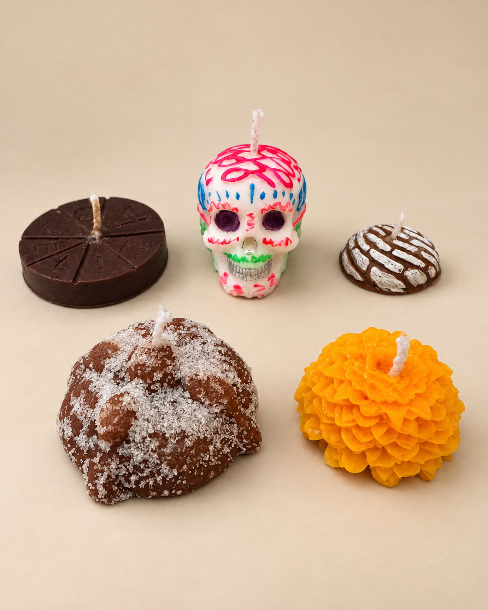
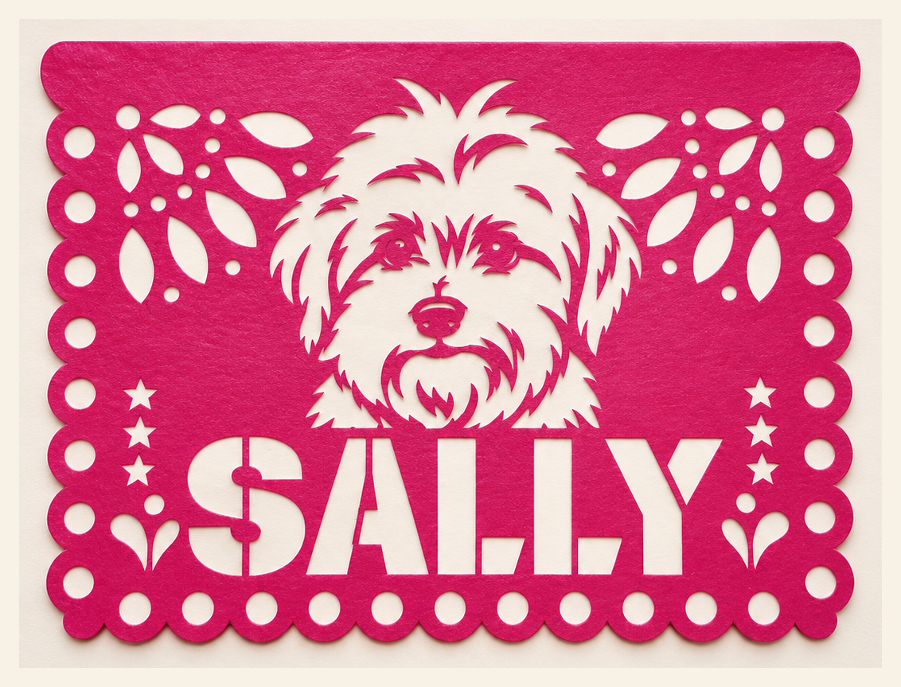
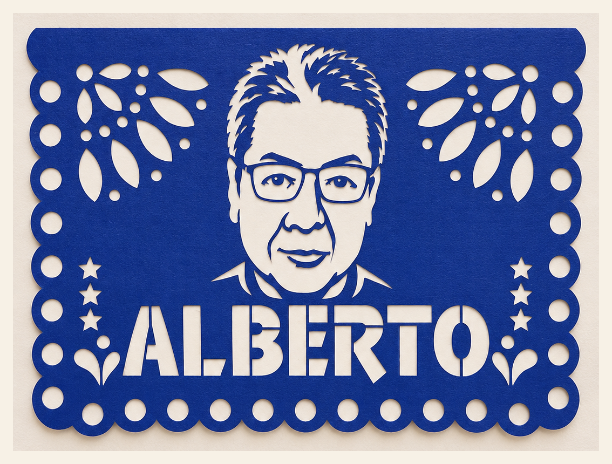
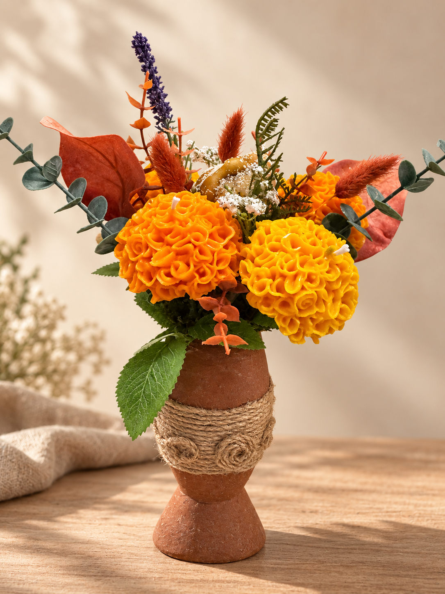

Una colección hecha para sentir
Hay aromas que saben volver a casa.
El chocolate caliente. El pan compartido. El color del cempasúchil. Aquella mascota que dejó huellitas para siempre. Un lugar en la mesa que, aunque hoy esté vacío, sigue lleno de recuerdos.
Esta colección nació de todo eso que permanece. Cada pieza se elabora artesanalmente, una a una, para transformar nuestras tradiciones en pequeños instantes capaces de volver a sentirse.
“Recordar también es una forma de volver a encontrarnos.”
En Ferval no hacemos solamente velas.
Creamos recuerdos que puedes mirar, encender, regalar y volver a sentir.
Creaciones con historia
Una ofrenda, una mesa, un recuerdo.
Cada composición reúne cera, aroma, barro, flores y símbolos de nuestra tradición. Toca una pieza para verla más de cerca.

Crea tu propia ofrenda
Piezas individuales
Elige las piezas que conecten contigo para complementar tu altar, crear tu propia composición o regalar un pequeño detalle hecho a mano.
Un detalle que lo hace verdaderamente suyo
Papel picado personalizado
Agrega a tu creación un papel picado personalizado con el nombre y el rostro de tu perrito o de ese ser querido que vive en tu corazón.



Hecho lento. Hecho a mano.
Lo especial también está en el proceso.
Ninguna pieza Ferval sale de una línea de producción. Cada vela se vierte, desmolda, detalla, pinta, monta y presenta artesanalmente.
Cuando eliges una creación Ferval, no compras únicamente cera, aroma o decoración. Te llevas diseño, tiempo, manos, historia y emoción.
Edición limitada 2026
Elige el recuerdo que quieres llevar contigo.
Confirma disponibilidad, personalización y fecha de entrega directamente con Ferval.